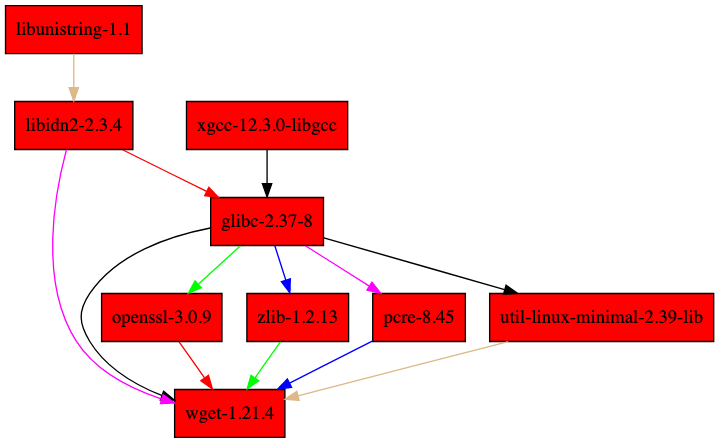
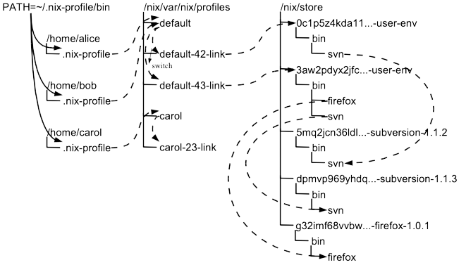
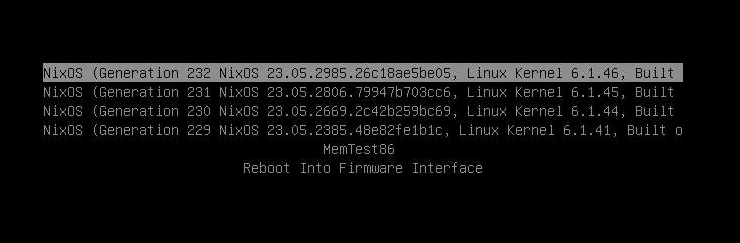

A single tool to rule them all.
PhD project of Eelco Dolstra
Initially intended to be alternative to make and package managers like rpm
Classical package managers issues:
YouTube: Eelco Dolstra - The Evolution of Nix
# list of files installed on filesystem by wget pkg $ dpkg -L wget ... /etc/wgetrc /usr/bin/wget /usr/share/doc/wget/README /usr/share/man/man1/wget.1.gz
# dynamically linked libraries $ ldd /usr/bin/wget libpcre2-8.so.0 => /lib/x86_64-linux-gnu/libpcre2-8.so.0 libuuid.so.1 => /lib/x86_64-linux-gnu/libuuid.so.1 libidn2.so.0 => /lib/x86_64-linux-gnu/libidn2.so.0 libssl.so.3 => /lib/x86_64-linux-gnu/libssl.so.3 libcrypto.so.3 => /lib/x86_64-linux-gnu/libcrypto.so.3 libz.so.1 => /lib/x86_64-linux-gnu/libz.so.1 libpsl.so.5 => /lib/x86_64-linux-gnu/libpsl.so.5 libc.so.6 => /lib/x86_64-linux-gnu/libc.so.6 /lib64/ld-linux-x86-64.so.2 libunistring.so.2 => /lib/x86_64-linux-gnu/libunistring.so.2
| Programming Language Domain | Deployment Domain |
|---|---|
| memory | disk |
| value, object | file |
| address | path name |
| pointer dereference | file access |
| pointer arithmetic | string operations |
| dangling pointer | path to absent file |
| object graph | dependency graph |
| calling constructed object with reference to other object | runtime dependency |
| calling constructor with reference to other object, not stored | build-time dependency |
| calling constructor with reference to other object, stored | retained dependency |
| languages without pointer discipline (e.g. assembler) | typical Unix-style deployment |
| languages with enough pointer discipline to support conservative garbage collection (e.g. C, C++) | Nix |
| languages with full pointer discipline (e.g. Java, Haskell) | as-yet unknown deployment style not enabled by contemporary operating systems |
Source: The Purely Functional Software Deployment Model
How to avoid address (file path) collision problem?
The hash is computed over all inputs, including the following:
$ which wget /nix/store/d3kkv9vjb3ljh7hr5v38gls8iykvwkny-wget-1.21.4/bin/wget $ ldd /nix/store/d3kkv9vjb3ljh7hr5v38gls8iykvwkny-wget-1.21.4/bin/wget libpcre.so.1 => /nix/store/pxl4n1lrns2xhc8f1s04srb4cphlg5cz-pcre-8.45/lib/libpcre.so.1 libuuid.so.1 => /nix/store/y5975fancsig22f6xw22mmmffn19n8zp-util-linux-minimal-2.39-lib/lib/libuuid.so.1 libidn2.so.0 => /nix/store/vh4pdds47783g12fmywazdx3v3kx0j4x-libidn2-2.3.4/lib/libidn2.so.0 libssl.so.3 => /nix/store/ix7cb1isdcdl4gq9hl4pdk6gyc4wrk14-openssl-3.0.9/lib/libssl.so.3 libcrypto.so.3 => /nix/store/ix7cb1isdcdl4gq9hl4pdk6gyc4wrk14-openssl-3.0.9/lib/libcrypto.so.3 libz.so.1 => /nix/store/mgz7sp9jxnk7c3rn1hvich9n0k2rjr7m-zlib-1.2.13/lib/libz.so.1 libc.so.6 => /nix/store/ayg065nw0xi1zsyi8glfh5pn4sfqd8xg-glibc-2.37-8/lib/libc.so.6 libunistring.so.5 => /nix/store/aw137ya6rvy61zw8ydsz22xwarsr8ynf-libunistring-1.1/lib/libunistring.so.5 libdl.so.2 => /nix/store/ayg065nw0xi1zsyi8glfh5pn4sfqd8xg-glibc-2.37-8/lib/libdl.so.2 libpthread.so.0 => /nix/store/ayg065nw0xi1zsyi8glfh5pn4sfqd8xg-glibc-2.37-8/lib/libpthread.so.0
Using hashes allow to identify exact build and runtime dependencies
$ nix-store -qR $(which wget) /nix/store/6kyaqlxcmfadiiq0mcdj1symv1jsp58w-xgcc-12.3.0-libgcc /nix/store/aw137ya6rvy61zw8ydsz22xwarsr8ynf-libunistring-1.1 /nix/store/vh4pdds47783g12fmywazdx3v3kx0j4x-libidn2-2.3.4 /nix/store/ayg065nw0xi1zsyi8glfh5pn4sfqd8xg-glibc-2.37-8 /nix/store/ix7cb1isdcdl4gq9hl4pdk6gyc4wrk14-openssl-3.0.9 /nix/store/mgz7sp9jxnk7c3rn1hvich9n0k2rjr7m-zlib-1.2.13 /nix/store/pxl4n1lrns2xhc8f1s04srb4cphlg5cz-pcre-8.45 /nix/store/y5975fancsig22f6xw22mmmffn19n8zp-util-linux-minimal-2.39-lib /nix/store/d3kkv9vjb3ljh7hr5v38gls8iykvwkny-wget-1.21.4
nix-store -q --graph $(which wget)

Clouser of runtime dependencies
Clousers can be distributed accross hosts
nix copy --to ssh-ng://remote-host /nix/store/qh4y4iw...
which is used to create distributed build and cache systems.
$ nix-collect-garbage finding garbage collector roots... removing stale temporary roots file '/nix/var/nix/temproots/1023955' deleting garbage... deleting '/nix/store/mvqj8avzhkqabkg51cyz617qnhzzawhl-anstyle-wincon-1.0.1' deleting '/nix/store/xzspb26l48b7hlhmlp6ac6sbivil0kgj-rust-operator-deps-0.1.0' deleting '/nix/store/q512fyfmpmdw0ap391j8vkdd8j435545-rust-operator-deps-0.1.0' deleting '/nix/store/gdnzfmns1ryh2pg5z9zbl0jgdspmmmx0-vendor-cargo-deps' ... deleting unused links... note: currently hard linking saves -0.00 MiB 1855 store paths deleted, 7729.65 MiB freed
# operators nix-repl> 1 + 2 3 nix-repl> [ 1 2 ] ++ [ 3 ] [ 1 2 3 ] # let ... in ..., allow repeated use of variables in scope # string interpolation nix-repl> let name = "World"; in "hello ${name}!" hello World! # attribute set, attributes accessible by '.' # with ..., expose attributes directly nix-repl> let attrs = { a = "str"; b = false; i = 3; }; in with attrs; [ a attrs.b i ] [ "str" false 3 ]
# merging attr sets # dynamic typing nix-repl> let attrs1 = { a = "str"; b = false; }; attrs2 = { b = 10; i = 3; }; in attrs1 // attrs2 { a = "str"; b = 10; i = 3; } # inherit, assign existing values in nested scope nix-repl> :p let x = { b = 1; }; y = 2; z = false; in { inherit x y; z = z; } { x = { b = 1; }; y = 2; z = false; }
Nameless function (lambda) always takes exactly one argument
# argument: function body nix-repl> let f = x: x + 1; in { type = builtins.typeOf f; result = f 1; } { result = 2; type = "lambda"; } # nested functions, x: (y: x + y) nix-repl> let f = x: y: x + y; in f 1 2 3
# attr set as argument, defined attr must be passed # ?, default value # ... , extra attrs # @name, named attr set nix-repl> let f = {a, b ? 1, ...}@args: a + b + args.c; in f { a = 1; c = 1; } 3
nix-repl> 6/3 /Users/mskalski/org/6/3 nix-repl> let r = 6/3; in builtins.typeOf r "path"
nix-repl> let f = builtins.fetchurl "http://127.0.0.1:8000/f"; b = 3; in b 3 # no request has been made to http server
Ephermal shell with new package
~ ❯ cowsay "nix is awesome!" Unknown command: cowsay ~ ❯ nix-shell -p cowsay [nix-shell:~]$ cowsay "nix is awesome!" _________________ < nix is awesome! > ----------------- \ ^__^ \ (oo)\_______ (__)\ )\/\ ||----w | || || [nix-shell:~]$ exit ~ ❯ cowsay "nix is awesome!" Unknown command: cowsay
Create ad hoc env with python and needed modules
~ ❯ python3 -c "import bcrypt; print(bcrypt.__version__)" Traceback (most recent call last): File "<string>", line 1, in <module> ModuleNotFoundError: No module named 'bcrypt' ~ ❯ nix-shell -p "python3.withPackages(p: [ p.bcrypt ])" [nix-shell:~]$ python3 -c "import bcrypt; print(bcrypt.__version__)" 4.0.1
Persistent environments with rollback history and atomic updates

Source: The Purely Functional Software Deployment Model
# Install btop package in user environment (new generation) $ nix profile install nixpkgs#btop # Compare changes between generations $ nix profile diff-closures Version 6 -> 7: btop: ∅ → 1.2.13, +1637.7 KiB gcc: ∅ → 12.3.0, +15845.2 KiB glibc: ∅ → 2.37-8, +29536.3 KiB libidn2: ∅ → 2.3.4, +350.4 KiB libunistring: ∅ → 1.1, +1813.8 KiB xgcc: ∅ → 12.3.0, +139.1 KiB # Revert to previous generation $ nix profile rollback switching profile from version 7 to 6
Introduce flake.nix and flake.lock to clear definitions of inputs and their versions.
Easy access, locked inputs, can produce variety of outputs binaries, container images etc..
$ nix flake show github:michalskalski/axact github:michalskalski/axact/9ca2f50dc4fb836af6e16dc03190cd2055d9f24b ├───devShell │ ├───aarch64-darwin omitted (use '--all-systems' to show) │ ├───aarch64-linux omitted (use '--all-systems' to show) │ ├───x86_64-darwin omitted (use '--all-systems' to show) │ └───x86_64-linux: development environment 'nix-shell' └───packages ├───aarch64-darwin │ ├───bin omitted (use '--all-systems' to show) │ ├───default omitted (use '--all-systems' to show) │ └───ociImage omitted (use '--all-systems' to show) ├───aarch64-linux │ ├───bin omitted (use '--all-systems' to show) │ ├───default omitted (use '--all-systems' to show) │ └───ociImage omitted (use '--all-systems' to show) ├───x86_64-darwin │ ├───bin omitted (use '--all-systems' to show) │ ├───default omitted (use '--all-systems' to show) │ └───ociImage omitted (use '--all-systems' to show) └───x86_64-linux ├───bin: package 'axact-0.1.0' ├───default: package 'axact-0.1.0' └───ociImage: package 'docker-image-axact.tar.gz'
Build binary
$ nix build github:michalskalski/axact#packages.x86_64-linux.bin # by default it produce 'result' symlink in current directory $ ls -l result -> /nix/store/qh4y4iwh0q40q5xxlp61bimhx8i6dp9i-axact-0.1.0 $ nix path-info --json $(realpath result) | jq . [ { "deriver": "/nix/store/gkxa58jxq5a9z7187afx0lywkckxr05b-axact-0.1.0.drv", "narHash": "sha256-cLMwsb0BQCRGXB1M+KGruZB+lR0gZRV3UKOFalkgONE=", "narSize": 6295640, "path": "/nix/store/qh4y4iwh0q40q5xxlp61bimhx8i6dp9i-axact-0.1.0", "references": [ "/nix/store/c50v7bf341jsza0n07784yvzp5fzjpn5-gcc-12.3.0-lib", "/nix/store/vq3sdi8l15rzfl5zvmwpafrzis4sm6xf-glibc-2.37-8" ], "registrationTime": 1692975733, "ultimate": true, "valid": true } ]
Build container image
$ nix build github:michalskalski/axact#packages.x86_64-linux.ociImage $ ls -l result result -> /nix/store/sn1yivqy1c1qjhypq3n515g4r47rgp0k-docker-image-axact.tar.gz # load image to local docker instance $ docker load < result 941c04e2c681: Loading layer [=======================================>] 47.59MB/47.59MB Loaded image: axact:latest # but docker is not needed $ skopeo copy "docker-archive://$(realpath result)" "docker://registry-address/img:tag"
Allow define development environment where all dependencies for your app are available, and share the same experience with other developers.
$ nix develop github:michalskalski/axact
# flake.nix ... devShell = mkShell { inputsFrom = [ bin ]; buildInputs = [dive skopeo] ++ darwinPkgs; };
Use direnv for seamless experience, your editor probably understand it too.
$ ls -a project/ .envrc flake.nix .. $ cat project/.envrc use flake $ cd project/ direnv: error project/.envrc is blocked. Run `direnv allow` to approve its content $ direnv allow direnv: loading project/.envrc direnv: using flake direnv: nix-direnv: using cached dev shell
Nix can be use to install and configure applications but also take care about whole OS configuration.
Fully integrated with nix, both from packages and configuration standpoint
By default uses channels as a source of packages versions.
Entire system can be described through declarative configuration.
Store configuration in repository, even better, make it flake and describe multiple hosts as separate outputs.
Share common configuration between hosts, making it more modular.
Test your new configuration in VM before applying on host:
# will start local vm with current system configuration $ nixos-rebuild build-vm
Every package install in system profile creates new generation and entry for it in bootloader.
System does not start after upgrade?
Boot from previous generation.

Run from livecd and restore system from existing config with one command, or generate disk image ahead.
Tries to replicate NixOS behaviour on macOS
https://github.com/nix-community/home-manager
Standalone or module for NixOS or nix-darwin
Rich library of software configuration.
Nix:
Build systems: